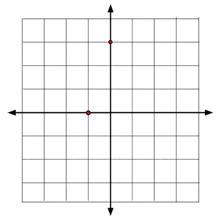
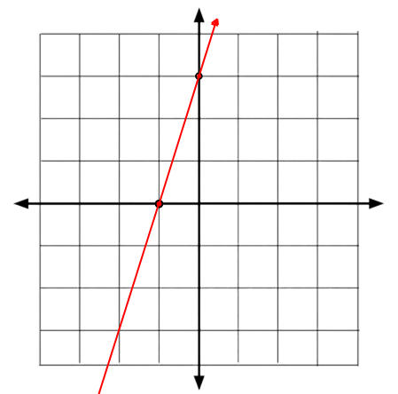

y = 2x + 3
y = -4x + 5
y = 1/2x - 4
y = -1x + 3
y = -1/4x - 1
Linear functions are commonly written as a table…| X | Y |
|---|---|
| 0 | 0 |
| 1 | 1 |
| 2 | 2 |
| 3 | 3 |
| 4 | 4 |
y = 3x - 1
Sometimes, linear functions are written like this…f(x) = 2x - 4
Linear Functions always have four types that they can land in. They can either be a positive slope, a negative slope, a zero slope, or an undefined slope.Slope = 0/x
Slope = x/0 = undefined
The four types of slopes are examples of Slope-Intercept linear functions.Ax + By = C
Examples include…2x + 3y = 6
x + 4y = 8
3x + 1y = 6
6x + 1y = 12
These can be rewritten as slope intercept linear functions. First we would have to get y on it’s own while x is on the other side. We can do this by adding/subtracting the opposite on both sides…6x + 1y = 12
y = -6x + 12
This slope would be negative and the slope would be -6x. This is the process of converting a standard form linear function to a slope intercept form function.y - y1 = m(x - x1)
This may look like the most complicated formula but it actually is identical to other forms of linear functions. First, there are small numbers beside some of the variables. These numbers are there to indicate that they are different from the variables that don’t have them. This is similar to the slope formula which also has these small numbers… The Point-Slope form is actually the exact same from this. By looking at the formula, the two y’s are the y values of two dots, x being the same thing except for the x values of both dots, but m is the slope. So the two x, times the slope equals the two y values. Let's say we had two dots on a coordinate graph...  We can see that one of the dots is placed at, (-2, 0) while the other is placed at (0, 3). We can fill in the values in the formula…0 - (-3) = m(0 - (-2))
3 = m(2)
3 = m * 2
3 = 2m
Now the slope times 2 equals 3. We can figure out the slope. We can divide both sides by 2…1.5 = m
The slope is 3/2 which means that a solution can be found by moving up three and to the right two... 